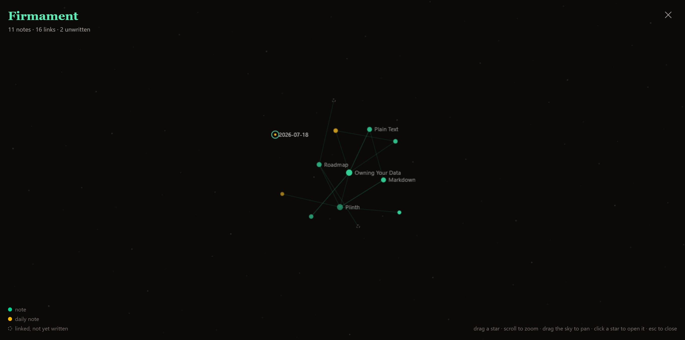
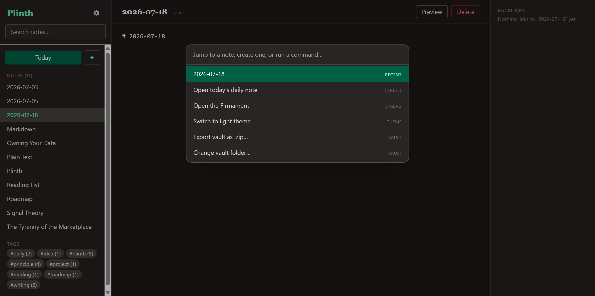
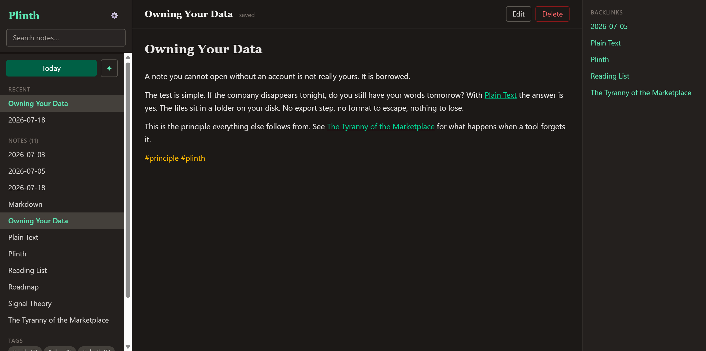

Software changes, companies fold, and clouds crash. Your thoughts deserve a foundation that doesn't move. Plinth keeps every note as plain Markdown, on your own drive, exactly where you left it.
Free · No account · Works offline

The old word for the night sky meant "the vault of heaven." Press Ctrl+G and your vault is drawn
overhead — every note a star, every [[link]] a line between them. Daily notes burn amber.
Broken links wait as dim, unborn stars until you write them. Drag a star, zoom the sky, click anything to
open it.


Most note apps add. Plinth subtracts the things that get between you and your writing.
Every file lives natively on your hard drive as standard Markdown. Nothing is uploaded. Nothing to breach.
Core features are baked in, so you never chase a broken community plugin or a config file again.
No setup, no onboarding, no accounts. Point it at a folder and start writing in seconds.
The parts of a real notebook, without the weight.
[[Note Name]] to connect ideas.#tags, right in the sidebar.Ctrl+G).Ctrl+K).Free and offline. Your notes never leave your machine.